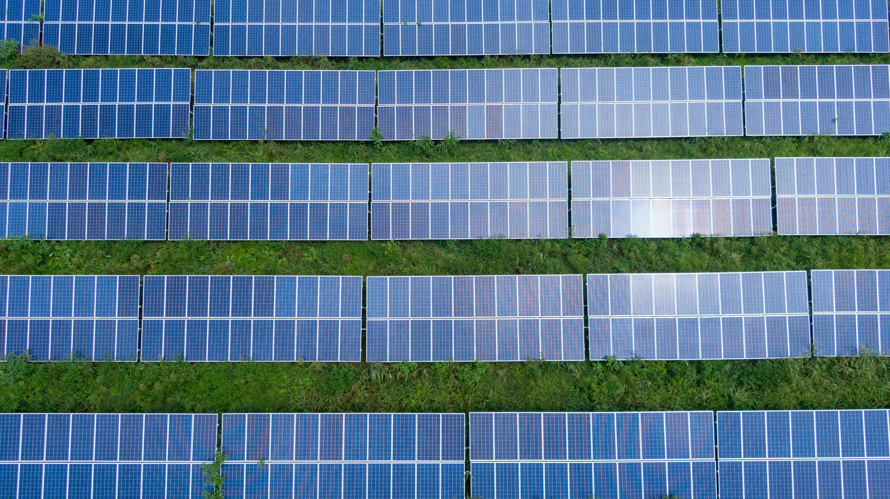
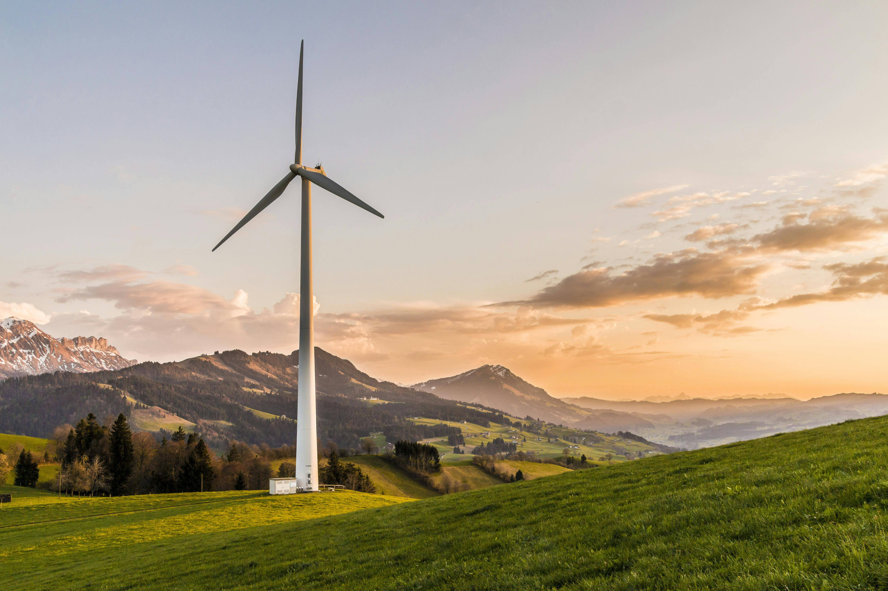
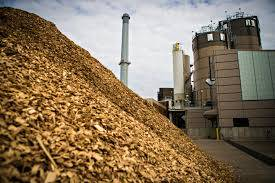
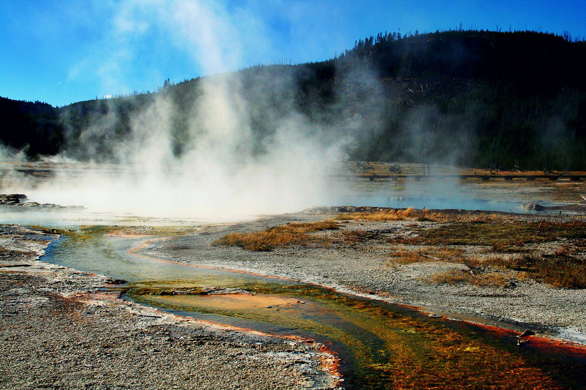

Sunčeva energija
Sunčeva energija koristi sunčeve zrake za proizvodnju električne energije putem solarnih panela.
Vjetroenergija
Vjetroelektrane koriste snagu vjetra kako bi pokretale turbine koje proizvode struju.
Hidroenergija

Energija vode proizvodi se pomoću brana i riječnih tokova koje okreću turbine.
Biomasa
Biomasa koristi organski otpad poput drva i biljaka za proizvodnju toplinske i električne energije.
Geotermalna energija
Geotermalna energija koristi toplinu iz unutrašnjosti Zemlje za grijanje i proizvodnju električne energije.